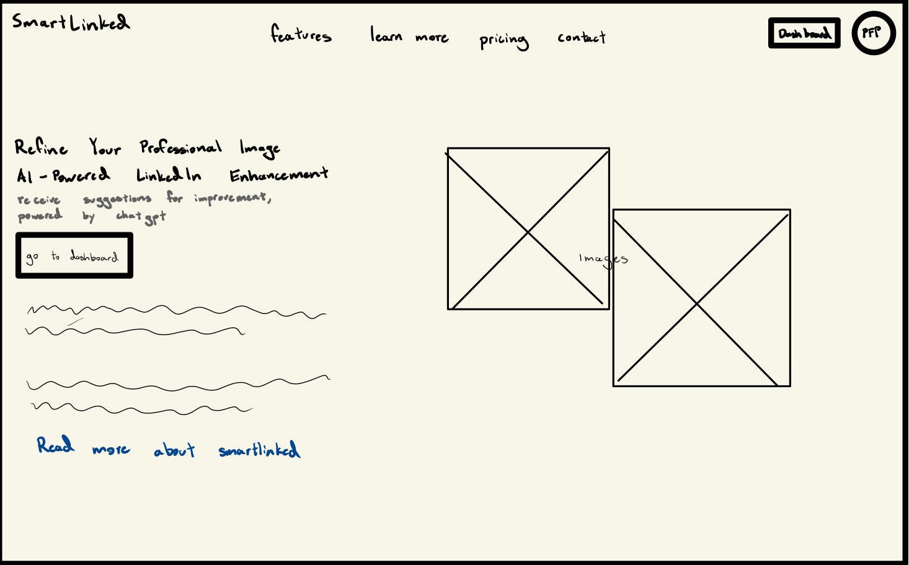
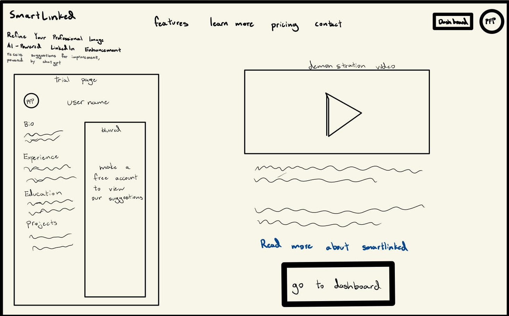

-
Using the favorite website you chose in homework 1, create a wireframe for one page of it using pen/paper, PowerPoint, or any your tool of choice. (use the 'img' tag!) Make sure to let us know what the name of your website is (Use the 'p' tag!)
SmartLinked  -
Try to improve the website you've chosen, and create a redesigned wireframe of one page for the same website using the principles of visual hierarchy that you learned from the article.

-
What is the goal of the website? Who is it intended for? How does the design accomplish this? Write 2-3 sentences answering these questions. (Use the 'p' tag again!)
The goal of SmartLinked is to suggest improvements for the user's LinkedIn profile through generative AI. It is primarily aimed towards college students who may need help making a good LinkedIn for the first time. The current design accomplishes this by stating what we are and overall being aesthetically pleasing to draw in users.
-
Write 2-3 sentences about what problems your redesign addressed, and how it solved them.
One big problem with the homepage is that it isn't interactable and doesn't display how SmartLinked can help first time users. I addressed this by adding a small trial page to give users something to interact with and hopefully draw first time users to create accounts. I also added a demonstration video that will properly display what SmartLinked can do, ideally it would be a built in animation but I left it as an embedded video for now. Some new problems from the redesign: I was forced to change the formatting in order to accomplish this so it looks messier and having both a trial and a video showing the user what we do is sorta redundant but at least it gives users options.
NOTE: Make sure to include the wireframe images in the website and don't just put it in your assets folder!
Your wireframes should look something like this: